Thorsten's virtual
home
My projects & publications
Things I build, write and share.
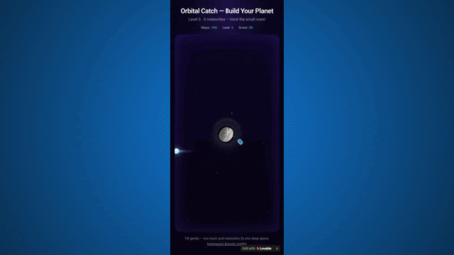
OrbitalCatch
Tilt your phone, grow your planet, avoid the teapot. Can you make it to a habitable planet?
Play OrbitalCatch ↗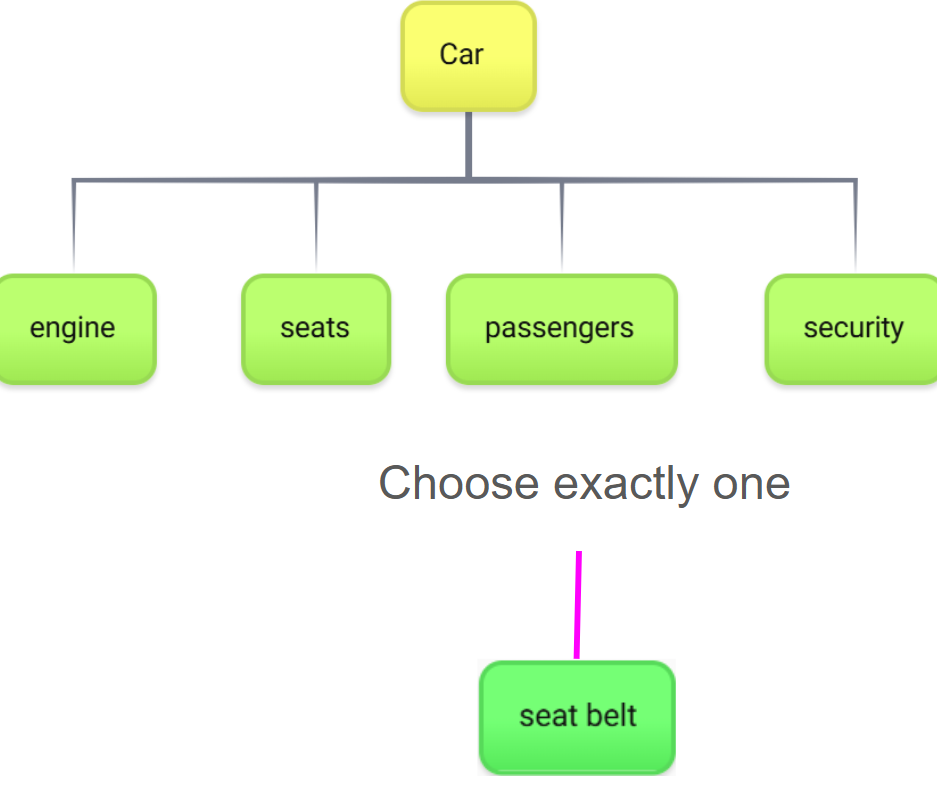
Rootless Mindmap
Explore knowledge through semantic links, multiple roots and circular relationships.
Open Rootless Mindmap ↗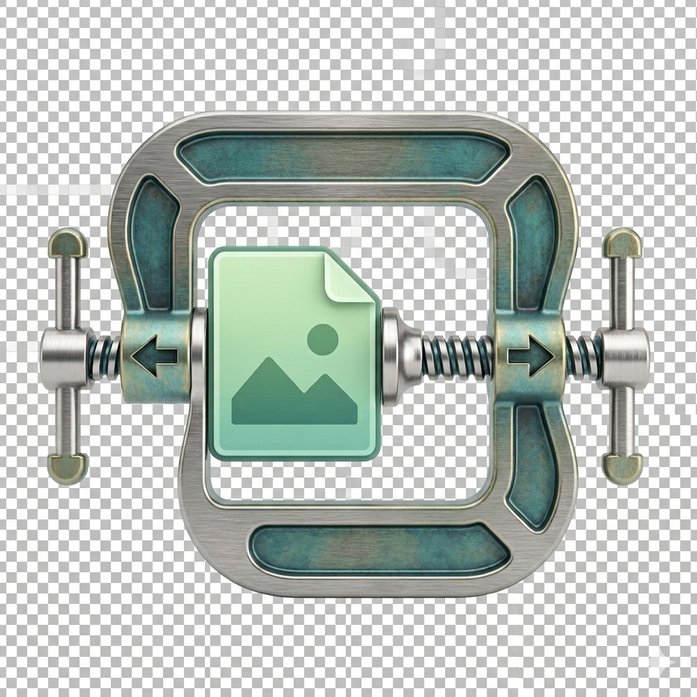
Image Shrinker
Reduce image file size and compare original and compressed images side by side.
Open Image Shrinker ↗QReative
Create QR codes without registration or expiry. I wrote it for myself; you can use it, too.
Create a QR code ↗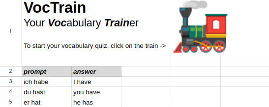
Vocabulary Trainer
Started in Pascal in 1990; now it lives in Google Sheets and Apps Script.
Get the vocabulary trainer ↗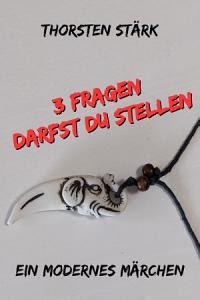
Farben, Gott und Drogenköche
Eine wunderschöne Kurzgeschichte zum Thema Farben, Gott und Drogenköche :)
View the book ↗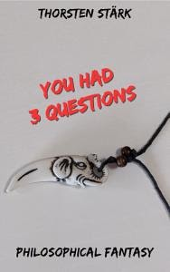
Three questions
What if God offered to answer three questions—which would these be?
View the book ↗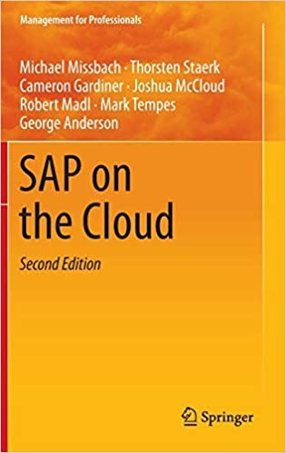
SAP on the Cloud
A book on my work.
View the book ↗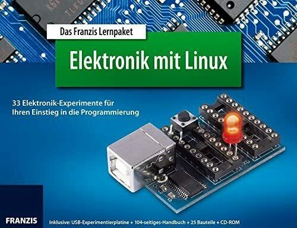
Linux, Python & USB
Ein Lernpaket mit Experimentierplatine und Elektronik-Bauteilen.
View the learning package ↗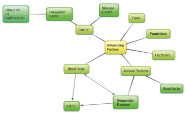
Fundamentals of I/O Benchmarking
ADMIN Magazine features my article on I/O benchmarking.
Read the article ↗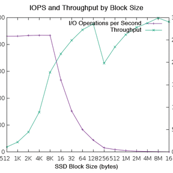
I/O Benchmarking
Linux Magazin bietet meinen I/O-Benchmarking-Artikel an :)
Read the article ↗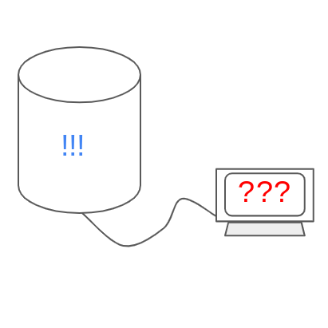
iSCSI: Speicherriese
Linux Magazin bietet meinen iSCSI-Artikel an :)
Read the article ↗